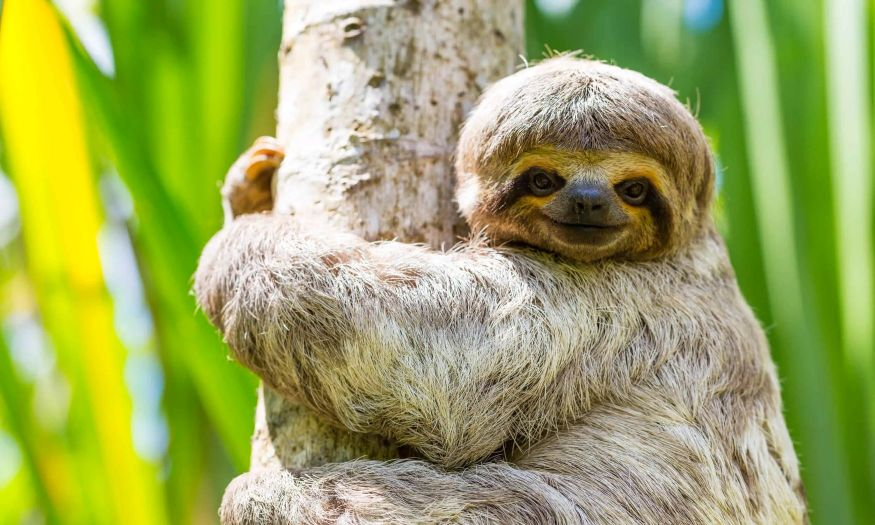
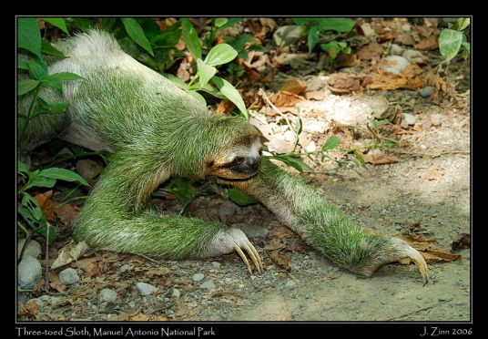

Sloths are my favorite animal. I like them because I think they're adorable! Sloths are very sweet with humans too. I hope to be able to meet one!
Sloths let moss and algae grow on themselves so that they can camoflouge within their surroundings. So if you ever see green stuff on a sloths fur, thats why! Sloths also mainly come out of their trees simply to use the bathroom! Another little unknown fact about sloths is that they can swim. I once saw a documentary that showed a sloth that swam across a large river to reunite with his mate.
| Food | Eat? (Y or N) |
|---|---|
| Leaves | Yes |
| Meat | No |
| Flowers | Yes |